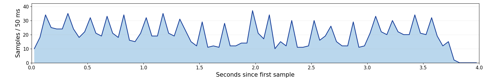
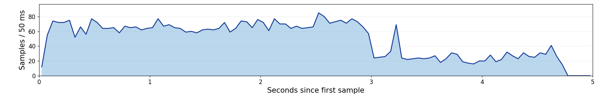

A sensor array of one million values needs range maximum (with the number of times the maximum occurs) and range gcd, under point assignments that may lower values. A Fenwick tree answers a range by subtracting two prefixes. Maximum and gcd cannot be subtracted.
Array 12 8 15 15 6 9, query [1, 5): the blocks (8,1), (15,2), (6,1) merge to maximum 15 with count 2; the gcd of 8, 15, 15, 6 is 1.
Prefix differences need an inverse, and neither maximum nor gcd has one. A segment tree combines disjoint block aggregates instead, needing only an associative operation with an identity.
Array of 2·base nodes (base: next power of two ≥ n); leaf i is node base + i and spare leaves hold the identity. Each parent stores merge(left, right). Queries keep two ordered accumulators.
| Function | Merges used | Total cost |
|---|---|---|
| build(values) | 1 per parent node | O(n) |
| assign(i, v) | 1 per ancestor | O(log n) |
| queryMax(l, r) | ≤ 2 blocks/level | O(log n) |
| queryGCD(l, r) | ≤ 2 blocks/level | O(log n + log V) (D3) |
S holds the empty summary E = (−∞, 0) and every pair (m, c): m the maximum of a non-empty interval, c > 0 its number of occurrences.
[P] is 1 when P is true, else 0. Closed: the result is again in S.
Associativity. Let M = max(m₁, m₂, m₃) and T = [m₁ = M]c₁ + [m₂ = M]c₂ + [m₃ = M]c₃. Whichever pair merges first, each merge keeps exactly the counts whose maximum equals the larger value, so both groupings give (M, T).
Identity. For X = (m, c) with m finite, m > −∞, so X ⊕ E = E ⊕ X = X. Also E ⊕ E = E.
Invariant: every node stores the aggregate of exactly its interval, in left-to-right order.
Leaves: one element, its own aggregate.
Parent: left ⊕ right is the aggregate of the joined interval, by associativity. Induction up to the root.
Query. [l, r) is split into disjoint tree nodes whose union is exactly [l, r), taken left to right. Each node is correct, and associativity lets us group them any way, so the answer is correct. Commutativity is never used.
The query never removes one prefix from another. It only combines covering nodes. The identity starts the accumulators and stands for an empty contribution. No step needs a b with a ⊕ b = e.
Required: associativity + identity. An inverse is not required.
Max has no subtraction, so one prefix tree cannot answer [l, r]. We keep tree (group ends at i) and mirror (group starts at i). A query walks in from both ends and meets at one middle element.
For queries, mirror alone is correct but O(log² n). Both trees together give O(log n).
1 · Doubling. x = odd·2ᵏ, so x + 2ᵏ = (odd+1)·2ᵏ and odd+1 is even: lowbit at least doubles. Same for y − lowbit(y).
2 · Unique top. [l, r] has exactly one index k with the largest lowbit 2ᵐ. Two odd multiples of 2ᵐ would have u + 2ᵐ between them, a multiple of 2ᵐ⁺¹.
3 · No jumping over k. If x < k and lowbit(x) = 2ʲ, x lies strictly between two multiples of 2ʲ⁺¹ and k is one of them, so x + 2ʲ ≤ k. Same for y.
Theorem 1 (correct). Both walks stop exactly at k. Mirror pieces tile l..k−1, tree pieces tile k+1..r, and a[k] fills the gap. Each stored value is the true max of its piece, so the max of the pieces is the max of l..r.
Theorem 2 (O(log n)). lowbit doubles each step and stays ≤ 2ᵐ ≤ w = r − l + 1, so each walk takes ≤ ⌊log₂ w⌋ steps. Total reads ≤ 2⌊log₂ w⌋ + 1: 39 for n = 10⁶.
Lemma 3 (tree). E(x) contains p exactly when x is on the up-chain p → p + lowbit(p) → … ≤ n.
On the chain: each next group starts at or before the current one (its lowbit is at least double), so it still holds p. Off the chain: x = c + t with c on the chain and 0 < t < lowbit(c). Then lowbit(x) = lowbit(t) ≤ t, so E(x) starts after c ≥ p.
Lemma 4 (mirror). S(y) contains p exactly when y is on the down-chain p → p − lowbit(p) → … ≥ 1. Same proof, mirrored.
The lazy rule fails. tree[i] = max(old, v) is fine for increases. For a decrease it keeps the old maximum: E(6) = 5..6 must drop from 6 to 4, the lazy rule keeps 6.
Theorem 3. After a[p] = v, every group on the two chains is recomputed from the current array, so it equals its true max whether v went up or down. Every other group does not contain p and did not change. The invariant holds again, so Theorem 1 keeps every query correct.
Proof. The common divisors of a and b are identical regardless of their order.
Proof. Both sides equal the greatest positive integer dividing all three numbers a, b, c.
Proof. Every positive divisor of a also divides zero.
GCD is associative with identity 0, so (ℤ≥0, gcd, 0) forms a commutative monoid.
A segment tree can therefore combine interval GCDs correctly, independent of grouping.
Example chain: 360 → 120 → 60 → 12 → 1. Every step divides the one before, so g1 ≥ g2 ≥ … ≥ gk.
A segment tree combines k = O(log n) stored interval values. Euclid's algorithm: gcd(a, b) = gcd(b, a mod b). Each GCD costs O(log V) modulo operations, where V bounds the array values.
Let x1, …, xk be the segment GCDs, with g1 = x1 and gi = gcd(gi−1, xi). For positive gi−1 and gi, Euclid's algorithm takes O(1 + log(gi−1 / gi)) modulo operations. Summing over all merges:
The logarithms telescope:
For zero-valued inputs, skip leading zero accumulators; merging with zero is constant-time. The bound assumes nonnegative integers and counts modulo operations in the standard arithmetic model.
| Reported test | Result |
|---|---|
| D1: 300 elements, 100,000 operations; seed 42 | No mismatches; final invariant check passed |
| D2: 10⁶ elements, 10⁶ operations; seed 42 | No mismatches; final block check passed |
For sums, subtraction cancels the earlier prefix:
For maximum:
| Array — 1-based indexing | M(1) | M(3) | R(2,3) |
|---|---|---|---|
| [10, 3, 7] | 10 | 10 | 7 |
| [10, 5, 9] | 10 | 10 | 9 |
Same prefix maxima, different range answers. Maximum has no cancellation inverse.
This rules out two-prefix recovery; richer Fenwick structures store additional interval information.
| Input | How I generated it | What it stresses |
|---|---|---|
| Repeated rebuilds | Start [4,3,2,1]. Set successive positions to zero; query after each. | Every decrease removes the current maximum and triggers a prefix-baseline rebuild. |
| Difficult queries | For n = 2ʰ, repeatedly query [0,n−2]. Example: [0,6] for eight elements. | Two inward walks plus the middle element: 2h−1 query steps. |
| Difficult decreases | Start [4,0,…,0]. Lower index zero: 4 → 3 → 2 → 1; query after each. | Keeps a unique maximum. Each assignment records 2h+2 steps and h+2 lowered blocks. |
Verification: exhaustive small-size checks and two full-scale runs with 1,048,576 elements and 1,000,000 operations each. All answers and predicted counters passed.
T[i] = maximum of its Fenwick block
Block: [i−lowbit(i)+1, i] (1-based)
Let M be the maximum of the other elements. For y ≥ x:
max(oldMaximum,y) = max(max(M,x),y) = max(M,y) ✓
[5,3] → assign first element to 1 → [1,3]
Rule gives: max(5,1) = 5 ✗
Correct maximum: 3
Start: [n,n−1,…,1]
Set successive positions to zero; query after each.
Before step j: [0,…,0, n−j, smaller values] ← unique maximum
After step j: maximum = n−j−1
k strict decreases → k rebuilds · Each rebuild: two linear passes → Θ(n) · Total: Θ(kn) · If k = n: Θ(n²)
Scope: this describes the rebuilding prefix baseline. The two-tree structure handles decreases differently.
| Step | What happens | Cost / reason |
|---|---|---|
| 1 Stored blocks | Each Fenwick block stores a maximum. | Prefix query combines O(log n) blocks. |
| 2 Increase | [5, 10, 7] → [5, 10, 12] | Compare 12 along the update path: O(log n). |
| 3 Decrease | [5, 10, 7] → [5, 2, 7] | Old max 10 cannot reveal new max 7. |
| 4 Rebuild | Copy values; propagate block maxima. | Two passes: n + n = 2n = O(n). |
| 5 All decreases | U− decreases, each causing a rebuild. | U− × O(n) = O(nU−). |
| 6 Total work | Build + Q queries + U+ increases | O(n + Q log n + U₊ log n + U₋ n) |
More decreases raised replay time, as predicted. Q = queries; U+ = nondecreasing updates; U− = decreases.


These are sampled events, not total cache misses. Traces include workload preparation and structure construction, not only timed operations. B has about 3× as many samples as A; this does not mean 3× as many total misses.